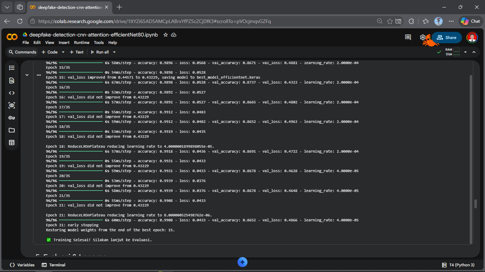
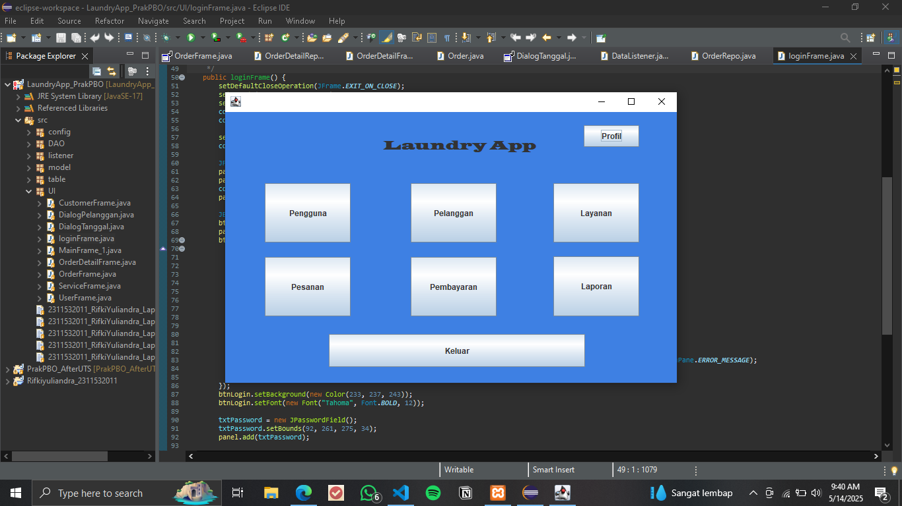
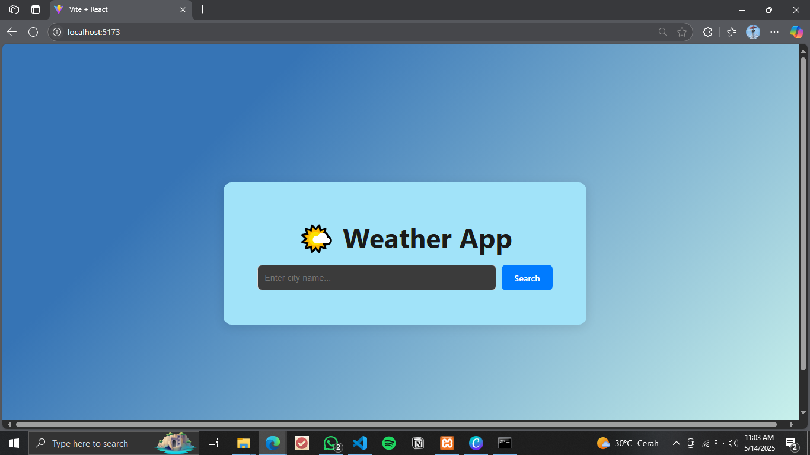
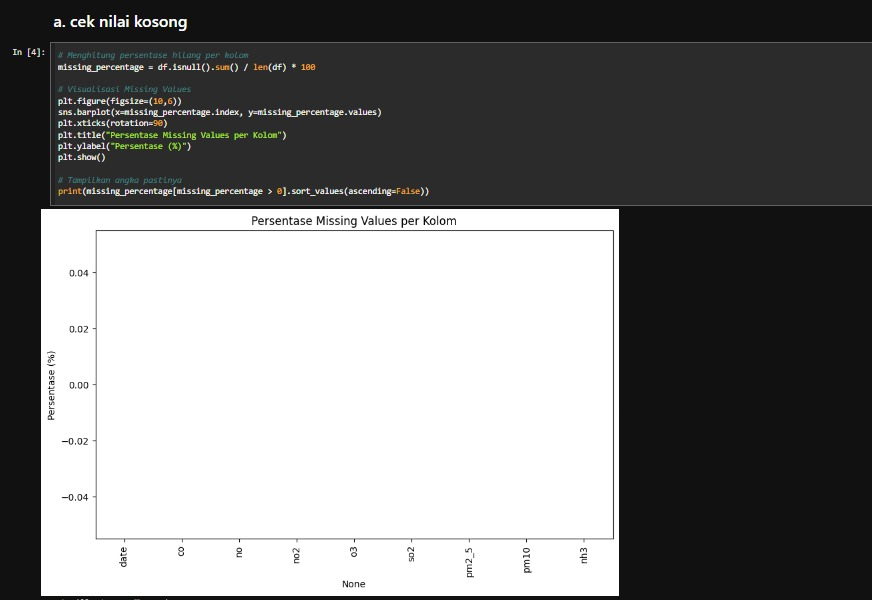
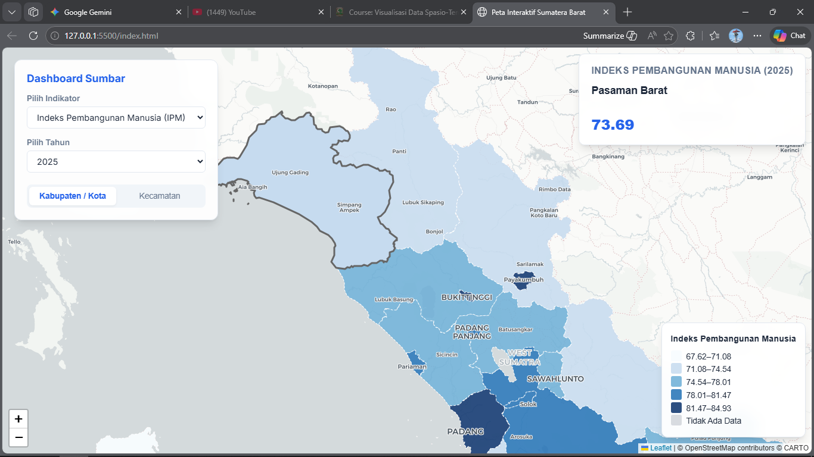
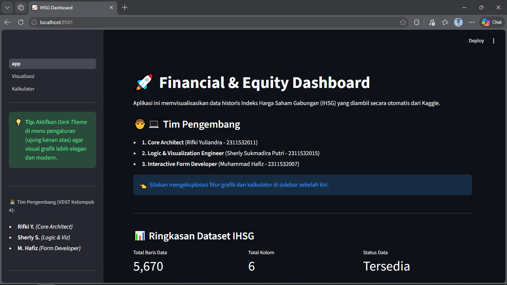
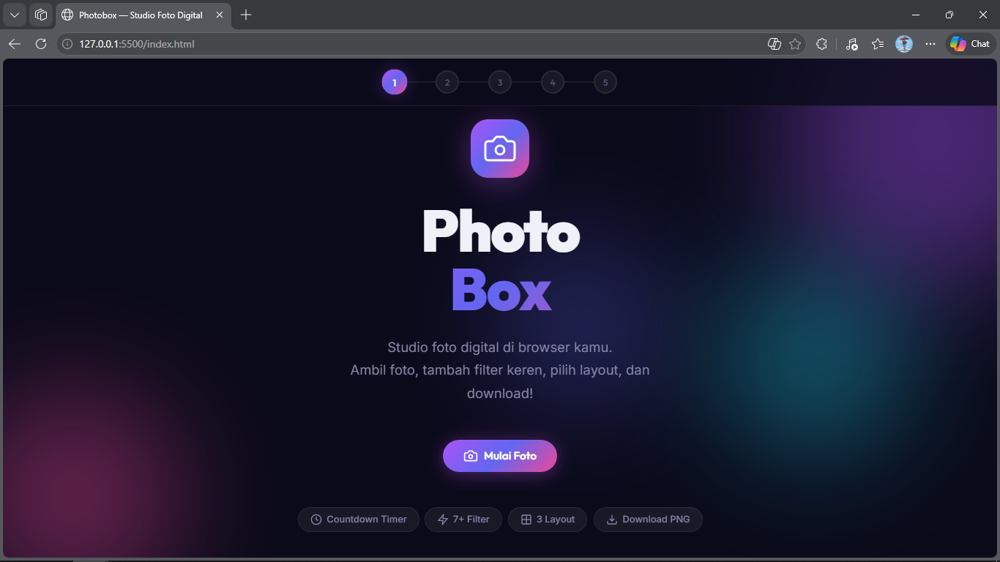

Enthusiast in AI, Data Science & Fullstack Development. Bridging the gap between logic and human experience.

AI-powered binary classifier that detects manipulated facial videos. Built a full pipeline: frame extraction with OpenCV → face detection → CNN-based classification model training.
Informatics Lab website design built with pure HTML5 and CSS3, featuring responsive layout and modern UI.

Desktop laundry management system built with Java OOP — handles order tracking, customer records, and payment calculation.

Interactive weather detection web app built with ReactJS, consuming a public weather API.
Personal finance tracker mobile app built with Flutter/Android.

Air quality prediction system using Big Data modeling and machine learning techniques.

Interactive spatio-temporal choropleth map of West Sumatra built with D3.js.

Spatio-temporal data visualization dashboard for financial and equity sectors.

Modern interactive UI design concept for a PhotoBox web interface.
Building scalable architecture using modern frameworks with a focus on performance and accessibility.
Machine Learning, Predictive Models, and Big Data Analysis.
Informatics Student
6th semester Informatics student with focus on AI, Machine Learning, and Fullstack Web Development.
Fullstack Developer
Built a fullstack POS and workspace management system for a campus co-working café, integrating AI-powered sentiment analysis on customer reviews.
Web Developer & IT Consultant
Developed the official village portal website in collaboration with local government officials (Wali Nagari).